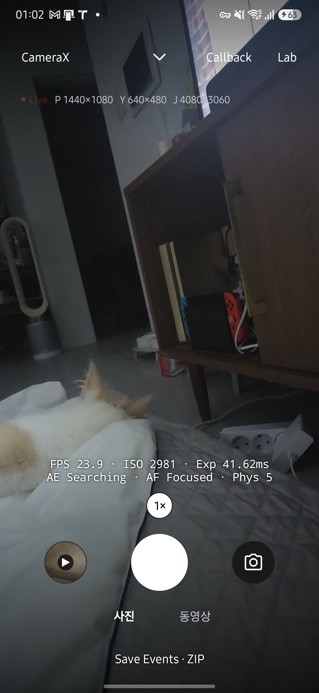

HAL CAMERA / User Guide
Know what differs.
Live가 Camera2와 CameraX 중 어느 엔진으로 열렸는지 확인하세요. 같은 조작이라도 요청 구성과 관측 가능한 버퍼가 다릅니다. 화면 조작은 Live, 그래프 해석은 Callback에서 확인합니다.
| 궁금한 내용 | 자세히 |
|---|---|
| 엔진이 구현하는 계약과, 엔진을 고르고 바꾸는 순서를 확인합니다. | 엔진 계약 |
| Camera2 엔진의 세션과 요청 구성을 확인합니다. | Camera2 엔진 |
| CameraX 엔진이 같은 기능을 제공하는 방법을 확인합니다. | CameraX 엔진 |
| 두 엔진의 결과가 달라질 수 있는 지점을 확인합니다. | 두 엔진의 차이 |
내부 구현은 아래에서 필요한 항목만 펼쳐 보세요.
두 엔진의 차이
두 엔진의 측정값을 비교하기 전에 아래 차이가 결과에 영향을 주는지 확인하세요. 같은 조작이라도 엔진이 카메라에 보내는 요청과 앱이 기록하는 시각이 다를 수 있습니다.
| 항목 | Camera2 | CameraX |
|---|---|---|
| 수동 촬영 | ISO·노출 시간·초점과 WB를 프리뷰·사진·녹화에 적용합니다. 지원 여부와 실제 적용값을 표시합니다. | Manual 버튼을 미지원 상태로 비활성화합니다. |
| 사진 쌍의 YUV | 같은 capture의 버퍼입니다. 센서 시각이 JPEG와 같습니다. | JPEG와 센서 시각이 가장 가까운 analysis 프레임입니다. 차이는 yuvOffsetNs에 기록됩니다. |
| YUV 저장 포맷 | JPEG 또는 NV21 중 하나를 저장합니다. NV21은 프레임당 16 MiB 이하만 허용합니다. 두 포맷 모두 촬영 JSON을 저장합니다. | JPEG와 촬영 JSON을 저장하며 NV21은 지원하지 않습니다. |
| RAW/DNG | RAW capability가 있는 카메라에서 DNG를 함께 저장합니다. | 지원하지 않으며 Camera2로 전환해야 합니다. |
| 버퍼 도착 기록 (Android 13 이상) | 프리뷰와 녹화 버퍼의 도착 시각을 relay로 기록합니다. | 프리뷰와 녹화 버퍼는 직접 관측하지 못합니다. ImageAnalysis와 ImageCapture의 이미지 수신은 기록합니다. |
| Benchmark | 지원합니다. | 지원하지 않으며 Camera2로 엽니다. |
| 기존 Dual (CLI) | 공통 줌, 메인 센서 제어, 한 요청의 두 센서 사진과 무음 MP4 두 개를 지원합니다. | 공통 줌과 무음 MP4 두 개를 지원합니다. 메인 개별 제어와 두 센서 사진은 지원하지 않습니다. |
| Multi | 지원되는 독립 장치 조합에서 동시 프리뷰와 카메라별 JPEG·무음 MP4를 제공합니다. 센서 동기를 보장하지 않습니다. | 미지원 안내 후 Camera2 경로로 열 수 있습니다. |
| PIP | Physical 또는 다른 Service ID 하나를 합성합니다. Live는 현재 CameraDevice와 화면을 유지하며 보조 Service 장치만 추가로 엽니다. Multi는 장치별 합성 결과를 저장합니다. | Camera2 전환을 확인합니다. 기존 CameraX 장치는 유지하지 않습니다. |
Dual의 Callback은 두 엔진 모두 Shutter·Metadata와 Main/Sub display를 표시합니다. Camera2 사진에는 Main/Sub photo도 표시합니다. Display는 화면 갱신 시각이며 위 표의 버퍼 도착 시각과 구분합니다.
제어·녹화·CLI 차이
| 항목 | Camera2 | CameraX |
|---|---|---|
| 요청 키 | 앱이 CaptureRequest를 직접 구성하며 request_observed에 기록합니다. |
3A 모드와 영역 일부를 CameraX가 정합니다. 앱은 CONTROL_AE_LOCK, AF cancel trigger, 광학 보정 키를 직접 넣습니다. |
| 스트림 선택 | Preview 크기와 YUV·JPEG 활성화·크기, FPS 범위를 선택합니다. | Preview·YUV·JPEG 크기와 출력 활성화를 선택합니다. 요청한 해상도만 필터에 남기며 조합은 bind 성공 여부로 확인합니다. |
| 손떨림 보정 | Auto·Off 및 지원 OIS·EIS (Video)·EIS (Preview + Video)를 선택하고 결과 메타데이터를 대조합니다. | 같은 모드를 하드웨어와 CameraX capability에 따라 제공합니다. EIS (Video)는 녹화 중에 적용하고, EIS (Preview + Video)는 프리뷰부터 적용합니다. 출력 조합에 따른 지원 범위는 다를 수 있습니다. |
| 녹화 코덱 | 기본 H.264이며 지원 조합에서 HEVC도 선택합니다. 오디오는 AAC 128kbps 44.1kHz입니다. | 기기의 encoder profile을 따릅니다. |
| 녹화 중 사진 | 녹화 세션에 JPEG 스트림을 넣고 TEMPLATE_VIDEO_SNAPSHOT으로 요청합니다. 조합을 거절하면 JPEG 없이 녹화합니다. |
녹화와 ImageCapture를 함께 bind하고 takePicture를 호출합니다. 거절하면 VideoCapture만 bind합니다. 두 엔진 모두 JPEG만 저장합니다. 기기 관찰은 녹화 중 사진의 제약을 확인하세요. |
| AE 잠금 중 플래시 사진 | precapture를 건너뛰고 잠긴 노출로 촬영합니다(Camera2StillCapture). |
ImageCapture가 자기 순서대로 precapture를 수행합니다. |
| AF 잠금 중 길게 누르기 | 탭한 AF 지점이 없으면 AF trigger를 보내지 않습니다. 탭한 지점이 있으면 그 지점을 끝내면서 AF_TRIGGER_CANCEL을 보냅니다(Camera2TouchFocus). |
AF 잠금도 FocusMeteringAction이므로, 합친 action을 다시 보내면서 AF가 한 번 더 스캔합니다. action에서 AF를 빼면 CameraX가 AF 잠금을 풀기 때문에 피할 수 없습니다(CameraXControls). |
| Live 표시의 프리뷰 판정 | TextureView의 화면 갱신 시각을 씁니다. | PreviewView가 STREAMING 상태이고 최근 capture 결과가 있는지로 판정합니다. |
| CLI | 기본 엔진입니다. 크기와 녹화 H264·HEVC를 지정합니다. | --engine CameraX로 선택합니다. 크기를 지정하며 녹화 코덱은 Auto입니다. |
근거와 검토 정보
- 근거 파일:
app/src/main/java/dev/halcamera/camera/Camera2Engine.kt,app/src/main/java/dev/halcamera/camera/Camera2StillCapture.kt,app/src/main/java/dev/halcamera/camera/Camera2LiveRecorder.kt,app/src/main/java/dev/halcamera/camera/TouchMeterRequests.kt,app/src/main/java/dev/halcamera/camera/CameraXEngine.kt,app/src/main/java/dev/halcamera/camera/CameraXStillCapture.kt,app/src/main/java/dev/halcamera/camera/CameraXLiveRecorder.kt,app/src/main/java/dev/halcamera/camera/CameraXControls.kt,app/src/main/java/dev/halcamera/MainActivity.kt,app/src/main/java/dev/halcamera/camera/ConcurrentSession.kt - 근거 수준: 코드 확인
- 검토 2026-10-10 @
adee7282· Codex (source and documentation consistency review; hardware observations recorded separately)
기기에서 관찰한 차이
Galaxy S25+에서 확인한 CameraX 관찰 결과와 검증 조건은 Validation에 있습니다.
녹화 중 사진의 실패와 정지
JPEG를 받기 전에는 촬영이 중단될 수 있지만, 받은 뒤에는 저장 결과를 기다립니다. 사진 요청과 녹화는 별개의 상태입니다. 사진 한 장의 실패가 녹화를 끝내지는 않습니다.
stateDiagram-v2
state "이미지 기다림" as Waiting
state "저장 중" as Saving
state "완료" as Done
[*] --> Waiting
Waiting --> Saving: JPEG 수신
Waiting --> Done: 수신 실패·5초 제한·세션 종료
Saving --> Done: 저장 성공 또는 실패
Done --> [*]
| 조건 | 처리 |
|---|---|
| JPEG 수신 전에 세션이나 카메라가 끝납니다. | 요청을 중단합니다. 이후 도착한 이미지는 저장하지 않고 닫습니다. |
| JPEG를 받은 뒤 녹화가 끝나거나 수신 제한 시간이 지납니다. | SnapshotRequest의 저장 결과를 덮어쓰지 않습니다. 결과는 한 번만 전달합니다. |
| 사진을 저장하고 있습니다. | 다음 녹화 중 사진을 받지 않습니다. 이미지 바이트를 읽다가 실패해도 버퍼를 닫고 실패를 전달합니다. |
| Camera2가 JPEG 포함 세션을 거절합니다. | SnapshotSessionRetry가 기존 세션 종료를 확인하고 JPEG 없는 녹화 세션을 한 번 구성합니다. 정지·카메라 종료 뒤에는 새 세션을 만들지 않습니다. |
근거는 camera/SnapshotRequest.kt와 엔진별 VideoSnapshot 구현입니다.
저장소 오류는 MediaLibrary의 생성·쓰기·공개 단계와 미완성 항목 정리를 검사합니다. 실제 기기 공간을 채우는 시험은 하지 않았습니다. 결정론적 오류 주입과 Galaxy S25+의 실제 조작 결과는 실패·정지 경합 검증 기록에 구분해 적었습니다.
사진 두 장은 어떻게 연결하나요?
촬영 요청 하나 → YUV + JPEG
두 이미지의 센서 시각이 같습니다.
JPEG 촬영 + 계속 받는 YUV
JPEG와 시각이 가장 가까운 YUV를 고릅니다.
yuvOffsetNs에 기록합니다.녹화 중 사진의 알려진 제약
CameraX 1.6.2로 녹화 중 사진을 찍으면 영상 간격이 늘어날 수 있습니다. Galaxy S25+·Android 16의 후면·전면·초광각에서 사진마다 약 33.5ms 간격이 약 67ms로 늘어났습니다. 녹화 연속성이 중요하면 같은 기기에서 확인한 Camera2 1080p 30fps 경로를 권장합니다. 다른 기기·FPS·코덱까지 연속성을 보장하는 의미는 아닙니다.
이 동작은 알려진 제약으로 수용하며 CameraX 내부 API를 통한 우회 수정은 현재 계획하지 않습니다. 안내는 문서에만 제공하고 앱 경고는 추가하지 않습니다. JPEG 기본 크기는 엔진별로 유지합니다. 근거는 검증 기록에 있으며, 남은 실패 경로는 #220, 기기 조합은 #221에서 추적합니다.
아래 화면은 2026년 9월 30일 Galaxy S25+·Android 16에서 HAL CAMERA 0.16.0(versionCode 593)을 실행해 촬영했습니다. 촬영 조건과 확인 범위를 함께 확인하세요. 이미지를 누르면 원본이 열립니다.
실제 화면 보기


엔진 계약
엔진 계약의 구현과 근거
화면은 엔진 클래스가 아니라 엔진이 구현한 인터페이스로 기능을 확인합니다. 그래서 Live의 셔터, 상단 제어, 프리뷰 터치는 Camera2와 CameraX에서 같은 코드로 동작하고, 엔진을 바꾸지 않습니다.
classDiagram
direction TB
class CameraEngine { <<interface>> }
class MediaCapture { <<interface>> }
class LiveTuning { <<interface>> }
class TouchMetering { <<interface>> }
CameraEngine <|.. Camera2Engine
CameraEngine <|.. CameraXEngine
MediaCapture <|.. Camera2Engine
MediaCapture <|.. CameraXEngine
LiveTuning <|.. Camera2Engine
LiveTuning <|.. CameraXEngine
TouchMetering <|.. Camera2Engine
TouchMetering <|.. CameraXEngine
점선 화살표는 인터페이스 구현을 뜻합니다. 실제로 사용할 수 있는 기능은 엔진의 실행 모드와 아래 조건에 따라 달라집니다.
| 인터페이스 | 담당하는 동작 | 구현 |
|---|---|---|
CameraEngine |
카메라 열기(start), 촬영(capture), 줌(setZoom), 닫기(close(done)) |
두 엔진 |
MediaCapture |
선택한 사진 출력 저장(capturePhoto, 기본은 YUV·JPEG 쌍), 녹화 시작·정지, 녹화 중 사진(snapshot, captureSnapshot), 촬영이나 녹화가 진행 중인지(mediaBusy) |
두 엔진. 벤치마크용 Camera2Engine은 사진 쌍을 만들지 않고 녹화 요청을 거절합니다 |
LiveTuning |
EV, AE·AF 잠금, 플래시와 수동 촬영(setControls) |
기본 제어는 두 엔진, 수동 노출·초점·WB는 Camera2 |
TouchMetering |
짧게 터치한 지점의 초점, 길게 누른 지점의 노출(meterAt) |
두 엔진 |
MainActivity는 engine as? MediaCapture처럼 인터페이스로 확인한 뒤 호출합니다. 카메라가 다시 열리는 중이라 엔진이 없으면 셔터와 제어 버튼이 비활성화되어 있으므로, 엔진이 없을 때 다른 엔진으로 바꾸는 경로는 없습니다. CLI의 촬영 요청이 이 상태에 도착하면 Media capture unavailable; camera not ready로 실패합니다.
엔진을 고르고 바꾸는 순서
- Live 상단의 API 버튼을 누를 때마다 Camera2와 CameraX가 번갈아 선택됩니다. 저장된 화면 상태가 없으면 Camera2로 시작합니다.
- 엔진이나 카메라를 바꾸면 기존 엔진의
close(done)완료 콜백을 받은 뒤에 새 엔진을 엽니다. 단일 카메라의 기본 엔진은 한 번에 하나만 유지합니다. PIP의 추가 Service ID와 Multi의 독립 CameraDevice는 별도로 관리합니다. - 엔진이나 카메라를 바꾸면 EV, AE·AF 잠금, 플래시는 기본값으로 돌아가고 상단 제어 줄이 접힙니다. 일시정지 후 재개처럼 같은 카메라를 다시 여는 경우에는 이전 제어 값을
setControls(controls, restore = true)로 다시 적용합니다. - 녹화 중에는 API 버튼과 카메라 선택이 비활성화되어 엔진을 바꿀 수 없습니다.
종료 통지와 다음 엔진의 대기 순서는 엔진 전환 그림을 확인하세요.
Photo·Video·Multi · P·Multi · V 사이에서 모드를 바꾸면 기존 세션을 닫고 스트림을 다시 구성합니다. 같은 모드를 다시 누르면 유지합니다. 단일 카메라는 새 프리뷰의 첫 화면 갱신 뒤, Multi는 모든 장치의 합성 프리뷰가 준비된 뒤에 촬영 버튼을 활성화합니다. CLI 호환용 Dual도 두 프리뷰가 모두 갱신된 뒤에 촬영할 수 있습니다. 모드 선택 자체로 사진이나 녹화를 시작하지는 않습니다.
Benchmark와 CLI가 쓰는 엔진
Benchmark는 Camera2 전용입니다. CameraX가 선택된 상태에서 Benchmark로 들어가면 StartCardPresenter가 Camera2로 전환한다고 알립니다. Live와 다른 스트림 크기 및 저장 방식은 Camera2 엔진에서 설명합니다.
CLI의 preview·capture·record.start는 LiveController를 통해 Camera2 또는 CameraX를 엽니다. 기본 엔진은 Camera2이며 --engine CameraX로 바꿉니다. 크기 옵션을 생략하면 기본 사진 쌍 구성을 유지하고, 명시한 옵션은 지원 검사 후 적용합니다. 이전 UI 설정은 이어받지 않습니다. streams는 화면 없이 지원 크기와 녹화 후보를 조회합니다. 인자와 예제는 CLI에 있습니다.
두 엔진이 함께 남기는 기록
두 엔진은 세션을 열 때 Telemetry.registerSession에 엔진 이름(Camera2 또는 CameraX)을 남기고, 같은 Telemetry.callback으로 capture 콜백을 기록합니다. 그래서 capture_started, capture_result 같은 이벤트 종류가 엔진과 관계없이 같습니다. 엔진별로 요청을 만드는 방법이 다르므로, 같은 이벤트라도 요청에 들어간 키는 엔진마다 다를 수 있습니다.
Live 제어와 터치 측광은 다음 이벤트를 추가로 남깁니다.
| 이벤트 | 기록하는 내용 |
|---|---|
controls_set |
요청한 EV, AE·AF 잠금, 플래시 모드와 Camera2 수동 ISO·노출 시간·초점·WB |
live_streams_requested |
Camera2 Live의 출력·FPS·녹화 설정과 요청한 stabilization 모드 |
ae_relock_wait, ae_relock, ae_relocked |
AE 잠금을 켠 채 세션을 새로 만들었을 때 잠금을 풀고 기다린 시점, 다시 잠근 이유(수렴 또는 2초 timeout), 잠금 전후의 노출 시간·ISO와 EV 차이 |
touch_meter, touch_meter_result |
터치 종류(AF·AE), 정규화 좌표, 결과(FOCUSED·FAILED·METERED) |
media_saved, video_saved |
저장한 사진 쌍의 센서 시각과 URI, 저장한 동영상의 URI |
request_observed의 afRegions·aeRegions와 capture_result의 afRegions·aeRegions를 비교하면, 요청한 영역과 HAL이 적용한 영역을 대조할 수 있습니다.
손떨림 보정은 두 이벤트의 opticalStabilization·videoStabilization·cropRegion으로 요청과 실제 결과를 대조합니다.
| 조건 | Live 표시와 판정 |
|---|---|
| 세션·촬영 단계·요청 모드가 바뀝니다. | 이전 결과를 제외합니다. |
| 결과 키가 없거나 1.5초 이상 오래됐습니다. | 적용 여부를 확인할 수 없다고 표시합니다. |
| 명시적으로 요청한 EIS 모드와 다른 결과가 1초 이상 이어집니다. | 경고합니다. 같은 프레임을 반복 조회한 것만으로는 경고하지 않습니다. |
| 요청과 일치하는 새 결과가 옵니다. | 불일치 경고를 해제합니다. |
| CameraX에서 EIS (Video)를 선택합니다. | VideoCapture가 연결된 녹화 중에 대조합니다. 녹화 전에는 실제 결과만 표시합니다. |
사진 결과는 Camera2의 요청 태그와 CameraX의 captureIntent로 제외합니다. 설정 화면은 구성 실패 오류만 표시하며 이전 세션 결과 목록을 제공하지 않습니다.
근거와 검토 정보
- 근거 파일:
app/src/main/java/dev/halcamera/camera/CameraEngine.kt,app/src/main/java/dev/halcamera/camera/Camera2Engine.kt,app/src/main/java/dev/halcamera/camera/CameraXEngine.kt,app/src/main/java/dev/halcamera/MainActivity.kt,app/src/main/java/dev/halcamera/ui/LiveControlBar.kt,app/src/main/java/dev/halcamera/ui/FocusRing.kt,app/src/main/java/dev/halcamera/camera/LiveControls.kt,app/src/main/java/dev/halcamera/benchmark/BenchmarkActivity.kt,app/src/main/java/dev/halcamera/benchmark/domain/StartCardPresenter.kt,app/src/main/java/dev/halcamera/cli/LiveController.kt,app/src/main/java/dev/halcamera/telemetry/Telemetry.kt - 근거 수준: 코드 확인
- 검토 2026-10-10 @
adee7282· Codex (source and documentation consistency review; hardware observations recorded separately)
Camera2 엔진
Camera2 엔진의 구현과 근거
Camera2Engine은 앱에서 CaptureRequest를 직접 구성합니다. request_observed에 기록한 키를 HAL 로그와 대조할 수 있습니다. 엔진 자체는 세션, 요청 구성, 줌, Live 제어를 담당하고, 사진은 Camera2StillCapture, Live 녹화는 Camera2LiveRecorder, 터치 측광은 Camera2TouchFocus, 벤치마크 녹화는 BenchmarkRecorder가 맡습니다. 카메라 요청과 capture 콜백은 엔진이 만든 카메라 스레드 하나에서 처리하고, 버퍼 relay와 파일 저장은 각자의 스레드에서 처리합니다.
수동 촬영
Camera2에서 노출·초점·WB를 고정할 수 있습니다. 요청한 값과 실제 적용값을 함께 확인하세요.
수동 촬영 구현
ManualControls는 ISO와 노출 시간을 한 쌍으로 저장하고 초점과 WB를 독립적으로 관리합니다. manualSupport는 capability와 요청 키, 센서 범위, 초점 이동 범위, 지원 AWB 모드를 확인합니다. 고정 초점에는 수동 초점을 제공하지 않습니다. ManualControlPanel은 요청값과 capture result의 실제 값을 구분해서 표시합니다.
Camera2 Live의 프리뷰·사진·녹화·녹화 중 사진 요청은 기존 제어와 터치 영역을 적용한 뒤 applyManualControls를 호출합니다. 수동 노출에서는 AE를 끄고 ISO·노출 시간·frame duration을 지정합니다. 수동 초점은 AF를 끄고 lens focus distance를 지정하므로 이전 터치가 모드를 덮어쓰지 못합니다. 자동으로 복귀하면 새 요청에는 수동 센서 키를 넣지 않습니다. Benchmark는 이 경로를 호출하지 않습니다.
수동 frame duration은 Live FPS의 상한으로 정하며 Auto FPS에서는 30fps를 사용합니다.
노출 시간은 센서 범위와 frame duration 중 작은 값으로 제한합니다.
영상 출력 자체의 최소 프레임 시간이나 HAL 양자화 때문에 실제 값이 다를 수 있으므로 capture_result의 ISO·노출·frame duration을 함께 확인합니다.
수동 WB는 MANUAL_POST_PROCESSING과 관련 요청 키가 있고 수동 노출이 켜져 있을 때 gains와 transform을 사용합니다.
색온도를 추정하지 않습니다.
손떨림 보정
지원 모드가 있어도 모든 크기와 FPS에서 적용되지는 않습니다. Live의 결과 표시로 실제 적용 상태를 확인하세요.
손떨림 보정 구현
Live Streams의 Stabilization에서 Auto, Off와 기기가 지원하는 OIS·EIS (Video)·EIS (Preview + Video)를 선택합니다.
EIS (Preview + Video)는 Android 13 이상에서 지원 목록과 요청 키가 모두 있을 때 제공합니다.
OIS와 EIS (Video)는 동시에 요청하지 않으며, EIS (Preview + Video)에서는 플랫폼이 OIS를 제어합니다.
Auto는 새 요청 템플릿의 기본값을 유지합니다.
설정은 프리뷰·사진·녹화·녹화 중 사진 요청에 적용합니다.
촬영·녹화가 끝난 뒤 카메라를 닫고 재개하며 카메라와 엔진마다 값을 분리합니다.
지원 모드가 있어도 모든 크기·FPS에서 적용된다는 뜻은 아닙니다.
Live 상단에서 현재 프리뷰·녹화의 EIS 적용 상태를 확인하세요. 요청과 다른 결과가 1초 이상 이어지면 요청값과 결과값을 함께 표시합니다.
결과 키가 없거나 1.5초 이상 오래됐으면 확인 불가로 표시하며, 사진 요청의 결과를 프리뷰 상태에 섞지 않습니다.
request_observed와 capture_result에는 opticalStabilization, videoStabilization, cropRegion을 기록합니다.
crop metadata는 보정 변환 전체나 실제 화각을 나타내지 않습니다.
Benchmark의 요청은 이 설정을 읽지 않습니다.
세션 구성
선택한 출력 조합을 기기가 받아들여야 프리뷰가 열립니다. 개별 크기를 지원하는 것만으로 조합이 보장되지는 않습니다.
세션 구성 구현
Live의 기본 세션은 프리뷰, YUV_420_888, JPEG 세 스트림으로 구성합니다. Lab → Settings → Live Streams에서 정확한 크기와 프리뷰 FPS 범위를 선택하고 YUV·JPEG를 각각 끌 수 있습니다. 프리뷰는 항상 켜집니다. 아래 표는 설정을 지정하지 않았을 때의 픽셀 예산입니다. 예산 이하 크기가 없으면 가장 작은 지원 크기를 고릅니다.
| 스트림 | Live에서 고르는 크기 | 용도 |
|---|---|---|
| 프리뷰 | 1280×720 이하에서 가장 큰 크기 | TextureView 표시 |
YUV (analysis_acquire_latest) |
640×480 이하에서 가장 큰 크기 | 프레임 도착 기록, 사진 쌍의 YUV |
JPEG (still) |
1920×1080 이하에서 가장 큰 크기 | 사진 쌍의 JPEG, 벤치마크 still |
벤치마크 세션은 profile의 StreamSpec 크기를 그대로 사용합니다. 지원하지 않는 크기이면 작은 크기로 대체하지 않고 구성 단계에서 실패합니다. 같은 profile ID로 다른 크기를 측정하면 비교가 무의미해지기 때문입니다.
명시한 Live 설정도 작은 크기로 대체하지 않습니다.
LiveStreamSupport는 개별 크기·일반 FPS 범위·녹화 인코더 지원을 검사하고, 엔진은 출력의 최소 프레임 시간과 FPS 하한을 대조합니다.
Android 10 이상에서는 isSessionConfigurationSupported로 출력 조합을 조회합니다.
조회를 지원하지 않거나 Android 9 이하이면 지원 여부를 미확인으로 기록하고 실제 세션 구성으로 확인합니다.
조합 조회만으로 FPS 지원을 확정하지 않으며 capture_result.fpsRange와 frameDurationNs로 실제 결과를 확인합니다.
설정 적용은 기존 엔진의 close(done) 뒤 새 엔진을 여는 순서입니다.
실패 이유는 화면에 남고, 설정 적용에 실패했고 정상 구성 기록이 있을 때만 오류 아래에 나타나는 이전 설정으로 복원 버튼으로 해당 카메라에서 마지막으로 구성이 성공했던 값으로 돌아갑니다.
사진·녹화·저장 중에는 적용하지 않습니다.
카메라와 엔진마다 설정을 분리하고 Activity 재생성 시 복원합니다.
CameraX도 같은 설정 화면에서 출력과 크기를 선택합니다.
Live 옆의 크기 표시를 누르면 설정을 바로 열며 이 경로의 뒤로 가기와 저장은 Live로 돌아갑니다.
Benchmark는 Live 설정을 읽지 않습니다.
CLI는 기본값에 명시한 크기 옵션을 적용하며 이전 화면 설정을 이어받지 않습니다.
처음 열기에 실패하면 어떻게 하나요?
Live는 첫 프레임 전의 일부 열기 오류만 다시 시도합니다. Benchmark와 첫 프레임 이후의 오류에는 이 규칙을 적용하지 않습니다.
stateDiagram-v2
state "열기와 첫 프레임 대기" as Opening
state "종료 정리와 재시도 대기" as Wait
state "프리뷰 준비" as Ready
state "실패 알림" as Failed
[*] --> Opening
Opening --> Ready: 첫 프레임
Opening --> Wait: 재시도 대상 오류
Wait --> Opening: 종료 처리 뒤 대기 시간 경과
Opening --> Failed: 대상 밖 오류 또는 횟수 소진
Ready --> [*]
Failed --> [*]
| 조건 | 처리 |
|---|---|
onDisconnected, 사용 중·최대 개수 초과·기기·서비스 오류 |
CameraOpenRetry가 200·400·800·1600·2000ms 간격으로 최대 5번 다시 엽니다. 같은 원인의 CameraAccessException도 대상입니다. |
| 실패한 기기가 열려 있습니다. | onClosed 뒤 다음 열기를 예약합니다. 시도마다 open_retry에 원인·회차·지연을 남깁니다. |
| 엔진이 비활성화되거나 재시도를 모두 썼습니다. | 새 열기를 진행하지 않습니다. 실패를 바로 알려 CLI가 제한 시간까지 기다리지 않게 합니다. |
다른 엔진이 카메라를 놓은 직후 서비스가 잠시 열기를 거부할 수 있어 이 재시도를 둡니다(#224).
엔진이나 카메라를 바꿀 때 Live의 첫 Camera2 열기는 이전 엔진이 쓰던 카메라가 실제로 해제될 때까지 기다립니다(#230). CameraX는 CameraState.CLOSED 뒤 close(done)을 부르지만 카메라 서비스는 그 카메라를 약 1초 더 잡고 있어, 그 사이의 열기가 거부되고 재시도 간격이 해제 시점을 늦게 맞혔기 때문입니다.
CameraManager.AvailabilityCallback이 그 카메라를 사용 가능으로 알리면 바로 열고, 2초가 지나면 기다리지 않고 엽니다.
이미 해제된 카메라는 콜백 등록 직후 사용 가능으로 알려지므로 기다리지 않습니다.
대기 시작과 끝은 release_wait·release_waited 이벤트에 카메라·결과·대기 시간으로 남고, 그 뒤의 열기 실패는 위 재시도가 그대로 맡습니다.
벤치마크는 기다리지 않습니다.
StreamConfiguration은 세션을 만드는 출력, 요청의 대상, Callback 그래프가 표시하는 스트림을 같은 목록에서 만듭니다. Android 13 이상의 Live에서는 PreviewBufferRelay가 PRIVATE 프리뷰 버퍼를 먼저 받아 도착 시각을 기록한 뒤 TextureView로 넘깁니다. 픽셀은 복사하지 않습니다. 그보다 낮은 버전에서는 TextureView에 직접 연결하고, 프리뷰 출력을 관측할 수 없다고 표시합니다.
사진
요청한 사진 출력을 받은 뒤 파일로 저장합니다. 두 이미지의 연결 기준은 엔진마다 다릅니다.
사진 구현
아래는 Live 사진의 흐름입니다. 벤치마크 still은 JPEG 도착만 측정하며 파일을 저장하지 않습니다.
sequenceDiagram
participant A as 촬영 요청
participant C as 카메라
participant P as 자료 모으기
participant S as 파일 저장
A->>C: 켜진 출력으로 still 요청
par 이미지 수신
C-->>P: 요청한 이미지 버퍼
and 최종 결과 수신
C-->>P: 최종 CaptureResult
end
P->>P: 같은 센서 시각으로 연결
P->>S: 필요한 자료가 모두 모이면 저장
이미지와 결과의 도착 순서는 고정되지 않습니다. 꺼진 출력은 기다리지 않습니다. 다음 표는 연결·저장 과정의 조건입니다.
| 단계 | 조건과 예외 |
|---|---|
| 플래시 측광 | Auto·On이고 AE 잠금이 꺼져 있을 때만 precapture를 실행합니다. PRECAPTURE를 벗어나거나, PRECAPTURE 없이 안정 결과가 3개 연속 오면 촬영합니다. 3초가 지나면 precapture_timeout을 남기고 촬영을 계속합니다. |
| 출력 선택 | 켜진 YUV·JPEG·RAW만 대상으로 합니다. RAW 단독도 가능하며, 모두 꺼져 있으면 셔터와 촬영 요청을 거절합니다. JPEG 방향은 화면 방향, 품질은 95입니다. |
| 버퍼 연결 | StillPair는 단일 출력도 capture의 센서 시각과 맞춥니다. 대기 중에는 acquireNextImage로 순서대로 읽어 대상 프레임을 버리지 않습니다. |
| 이미지 반납 | 콜백에서 stride·crop을 고려해 YUV를 NV21으로 복사하고 Image를 닫습니다. JPEG 포맷이면 저장 스레드에서 압축·회전하며 NV21이면 복사한 샘플을 그대로 씁니다. |
| 저장과 제한 시간 | MediaLibrary.saveCapture로 이미지·JSON을 씁니다. 5초 안에 필요한 자료가 모이지 않으면 capture_timeout으로 끝납니다. 사진 모드의 이 요청은 녹화 중에 받지 않습니다. 녹화 중 사진은 별도 경로입니다. |
파일은 언제 공개하나요?
sequenceDiagram
participant S as 저장 작업
participant M as MediaLibrary
S->>M: 이미지와 촬영 정보 전달
M->>M: 항목 생성과 파일 쓰기
alt 모든 쓰기 성공
M->>M: 항목 공개
M-->>S: 파일 목록
else 생성·쓰기·공개 실패
M->>M: 이번 촬영 항목 삭제 시도
M-->>S: 실패
end
Android 10 이상에서는 IS_PENDING으로 쓰는 중인 항목의 공개를 미룹니다. 이전 버전에는 이 보호가 없으며, 여러 항목의 공개와 실패 후 삭제를 완전한 원자적 처리로 보장하지 않습니다. 생성·쓰기·공개 중 예외가 나면 이미 만든 항목의 삭제를 시도합니다.
YUV 저장 포맷
사진 파일을 열어 보려면 JPEG를, 변환 전 YUV 샘플을 분석하려면 NV21을 선택하세요. YUV Save Format에서 둘 중 하나를 고릅니다. 두 포맷을 동시에 저장하지 않습니다.
| 선택 | 파일 | 폴더 | 지원 |
|---|---|---|---|
| JPEG | _YUV.jpg |
DCIM/HALCamera |
Camera2·CameraX |
| NV21 | _YUV.nv21 |
Download/HALCamera |
Camera2만 지원하며, 짝수 크기·프레임당 16 MiB 이하여야 합니다. |
| 촬영 정보 (자동 저장) | _metadata.json |
Download/HALCamera |
사진 모드에서 두 포맷 모두 함께 저장합니다. |
이 선택은 녹화 중 사진에는 적용하지 않습니다. CLI 촬영의 기본 YUV 저장 포맷은 JPEG이며, --yuv-format NV21로 NV21을 지정할 수 있습니다. RAW 크기는 --raw-size로 따로 지정합니다.
_YUV.nv21은 YUV_420_888의 crop 영역에 있는 8비트 샘플을 손실 없이 재배열한 파일입니다. Y를 행 순서로 쓰고 V·U를 교대로 쓰며 패딩·회전·압축·색 변환을 적용하지 않습니다. JSON의 outputs에는 실제 파일명·MIME·크기를, NV21에는 출력 plane의 offset/rowStride/pixelStride와 원본 크기·crop·stride를 함께 기록합니다. 저장소의 docs/design/ORIGINAL-YUV.md에 복원 규칙이 있습니다.
JPEG와 NV21 촬영 모두 이미지와 같은 SENSOR_TIMESTAMP의 최종 CaptureResult를 기다립니다. JSON의 capture에는 카메라 ID, 요청 ID·태그, 프레임 번호, 센서 시각과 시각 소스, 노출 시간·ISO·프레임 주기·AE 상태, JPEG 방향을 저장합니다. 결과가 없으면 5초 뒤 실패하며 프리뷰 결과로 대체하지 않습니다. 출력별 최대 두 프레임을 보관하고 시각 확정 뒤 다른 버퍼를 버립니다. 저장이 끝날 때까지 다음 촬영을 받지 않습니다.
RAW/DNG
Live Streams의 **RAW (DNG)**에서 RAW_SENSOR 크기를 고르면 사진마다 <촬영명>_RAW.dng를 DCIM/HALCamera에 함께 저장합니다. 기본값은 Off입니다. 카메라가 RAW capability를 알리지 않으면 선택할 수 없고, CameraX는 RAW를 거절합니다. RAW만 켜고 YUV·JPEG를 꺼도 촬영할 수 있습니다. 세션이 RAW 조합을 거부하면 기존 구성 거부 안내를 표시합니다.
RAW reader는 버퍼 두 개로 열고 still 요청에만 포함합니다. 이미지 콜백은 같은 센서 시각의 RAW 프레임을 행 패딩 없는 16비트 샘플로 직접 버퍼에 복사하고 Image를 닫습니다. 저장 스레드에서 DngCreator가 카메라 특성과 같은 SENSOR_TIMESTAMP의 최종 CaptureResult로 DNG를 씁니다. 화면 방향은 DNG 방향 태그에만 넣고 샘플은 회전하지 않습니다. JSON outputs에는 DNG의 크기·센서 시각·CFA 배열과 카메라 특성의 white level·black level을 기록하고, 카메라가 보고한 프레임별 값은 dynamicBlackLevel·dynamicWhiteLevel에 따로 기록합니다. DngCreator는 프레임별 값이 있으면 그 값을 DNG에 씁니다. Live 상단 스트림 표시에는 RAW 크기가 함께 나옵니다. 저장 뒤 상태에 파일 수와 합계 크기를 표시합니다. 벤치마크와 녹화 세션에는 RAW 출력을 넣지 않습니다.
녹화
녹화용 출력으로 전환한 뒤 MP4를 저장합니다. 크기·FPS·코덱의 지원 조건을 확인하세요.
녹화 구현
sequenceDiagram
participant U as Live
participant R as 녹화 처리
participant S as 저장
U->>R: 녹화 시작
R->>R: 녹화 세션 구성과 시작
R-->>U: 녹화 시작 통지
U->>R: 정지 요청
R->>R: 세션 종료와 파일 마무리
par 파일 저장
R->>S: 저장 가능한 MP4 저장 예약
S-->>U: 저장 결과
and 프리뷰 복구
R->>R: 활성 카메라의 프리뷰 세션 복구
end
정상 정지의 순서입니다. 파일 저장과 프리뷰 복구는 별도로 진행하므로 프리뷰가 돌아왔다고 저장이 끝난 것은 아닙니다. 짧거나 실패한 파일은 저장하지 않고 이유를 알립니다.
Camera2LiveRecorder의 기본값은 MediaRecorder가 지원하는 가로 크기 중 1920×1080 픽셀 예산으로 고른 크기, H.264, 30fps, 10Mbps입니다.
Live 스트림 설정에서는 카메라 크기·고정 AE FPS 범위·인코더의 surface 입력, 크기·프레임률·비트레이트 지원을 만족하는 H.264/HEVC 조합을 선택합니다.
후보 FPS는 24·25·30·60이며 고속 세션은 제공하지 않습니다.
명시한 크기·FPS·코덱으로 준비하고 실패하면 이유를 표시합니다.
소리를 포함하면 AAC 128kbps, 44.1kHz를 사용합니다.
- 녹화를 시작하면 프리뷰와 인코더, 그리고 녹화 중 사진용 JPEG 스트림으로 새 세션을 만듭니다. YUV 스트림은 이 세션에 없으므로 녹화 중 사진은 JPEG만 저장합니다. 카메라가 이 조합을 거절하면 JPEG 없이 프리뷰와 인코더만으로 다시 구성하고, 이 경우 녹화 중 사진을 지원하지 않는다는 이유를 화면에 알립니다.
- Android 13 이상에서는
RecordingBufferRelay가 인코더로 가는 PRIVATE 버퍼를 먼저 받아 도착 시각을 기록합니다. 그보다 낮은 버전에서는 인코더에 직접 연결하고, 녹화 출력을 관측할 수 없다고 표시합니다. - 녹화 요청은
TEMPLATE_RECORD이며, 연속 동영상 AF(CONTINUOUS_VIDEO)를 지원하면 사용합니다. 줌과 Live 제어는 녹화 중에도 같은 요청을 다시 만들어 적용합니다. - 정지하면 세션을 닫고 파일을 마무리합니다.
MediaLibrary.saveVideo로 저장을 예약하고 활성 카메라의 프리뷰 세션을 다시 만듭니다. 파일이 재생할 수 없을 만큼 짧으면 저장하지 않고 알립니다.
녹화 중 사진(Camera2VideoSnapshot)은 녹화를 멈추지 않고 JPEG 한 장을 저장합니다. 녹화 세션의 JPEG 크기는 요청한 크기(없으면 1080p 이하 중 가장 큰 크기)를 먼저 시도하고, 세션 조합 조회(isSessionConfigurationSupported)가 거절하면 녹화 크기 안에 들어가는 가장 큰 크기로 내려갑니다.
실제 크기는 recording_started의 snapshotSize에 남아 요청값과 구분됩니다.
사진 요청은 TEMPLATE_VIDEO_SNAPSHOT이며 프리뷰·인코더·JPEG 세 출력을 모두 대상으로 합니다.
사진은 한 번에 한 장만 처리하고, 앞의 사진이 저장되는 중이거나 녹화가 멈추는 중이면 새 요청을 거절합니다.
5초 안에 JPEG이 오지 않거나 저장에 실패하면 video_snapshot_failed를 기록하고 알림만 표시하며, 녹화 파일과 세션은 그대로 유지합니다.
정지와 겹친 사진은 세션이 닫히기 전에 도착하면 저장하고, 그렇지 않으면 실패로 답합니다.
Live 스트림 설정에서 JPEG을 끄면 녹화 중 사진도 지원하지 않습니다.
live_streams_changed·live_streams_requested는 변경·요청값을, live_stream_preflight는 출력 조합 조회 결과를 기록합니다.
성공한 출력 크기는 configured와 negotiatedStreams에 남습니다.
녹화는 live_recording_requested·live_recording_preflight·recording_started로 구분하며, 요청한 인코더 설정과 결과 FPS를 혼동하지 않습니다.
벤치마크의 RECORD 단계는 BenchmarkRecorder가 따로 처리합니다. 측정은 크기를 스스로 고르거나 소리를 녹음하거나 앨범에 저장하면 안 되기 때문입니다.
Live 제어
줌·EV·잠금 값은 요청 종류가 바뀌어도 유지하도록 적용합니다.
Live 제어 구현
applyLiveControls가 프리뷰·still·녹화 요청에 같은 값을 넣으므로, 요청 종류가 바뀌어도 잠금이나 EV가 빠지지 않습니다.
| 제어 | 요청 키 |
|---|---|
| EV | CONTROL_AE_EXPOSURE_COMPENSATION. AE 잠금 중에도 적용됩니다. |
| AE 잠금 | CONTROL_AE_LOCK |
| 플래시 Auto·On | CONTROL_AE_MODE의 ON_AUTO_FLASH·ON_ALWAYS_FLASH |
| 토치 | FLASH_MODE_TORCH |
| AF 잠금 | 키가 아니라 연속 AF 모드에서 보내는 CONTROL_AF_TRIGGER_START 한 번입니다. 잠금을 풀 때는 CANCEL을 보냅니다. |
노출은 언제 다시 잠그나요?
AE 잠금을 켠 채 녹화 시작·정지로 세션이 바뀌면 AeRelock이 노출을 다시 맞춥니다.
stateDiagram-v2
state "잠금 해제와 안정 대기" as Wait
state "다시 잠금" as Lock
[*] --> Wait
Wait --> Lock: 안정 결과 2개 연속
Wait --> Lock: 또는 2초 경과
Lock --> [*]
새 세션의 첫 요청부터 잠그면 아직 수렴하지 않은 노출이 고정될 수 있습니다. 다시 잠근 노출이 이전보다 1/3 EV 넘게 다르면 차이를 알립니다. AF 잠금도 새 세션에서 trigger를 다시 보냅니다. 이 상태도는 AE 잠금이 켜진 경우의 재잠금 과정만 보여 줍니다.
줌과 제어는 입력마다 요청을 보내지 않습니다. 값을 먼저 저장하고 카메라 스레드에 요청 하나만 예약하므로, 빠른 드래그는 스레드 한 차례에 요청 하나로 합쳐집니다.
터치 측광
짧게 터치하면 초점을, 길게 누르면 노출을 조절합니다. 두 지점은 따로 관리합니다.
터치 측광 구현
stateDiagram-v2
state "초점 결과 기다림" as Wait
state "결과와 지점 표시" as Result
state "연속 AF로 복귀" as Auto
state "잠긴 지점 유지" as Locked
[*] --> Wait
Wait --> Result: 결과 수신 또는 3초 제한
Result --> Auto: AF 잠금 꺼짐, 결과 후 5초
Result --> Locked: AF 잠금 켜짐
Auto --> [*]
Camera2에서 짧게 터치한 경우입니다. 긴 누르기는 별도의 AE 측광이며 아래 4번 규칙을 따릅니다. 다른 지점을 누르거나 카메라를 닫는 동작은 이 한 번의 요청 그림에서 생략했습니다.
Camera2TouchFocus는 탭한 AF 지점과 길게 누른 AE 지점을 따로 가집니다.
- TextureView의 변환 행렬을 거꾸로 적용해 기기 기본 방향의 정규화 좌표를 구합니다.
TouchMeter.toSensor가 전면 카메라의 좌우 반전을 되돌리고SENSOR_ORIENTATION만큼 돌려 센서 좌표로 바꿉니다. TouchMeter.region이 보이는 영역의 짧은 변의 1/6 크기 정사각형을 만듭니다. 16:9 프리뷰는 4:3 active array의 가운데만 보여 주므로, 영역도 보이는 범위 안으로 제한합니다.- 짧은 터치는 AF 영역과 AUTO AF 모드를 repeating 요청에 넣고
AF_TRIGGER_START를 한 번 보냅니다. trigger capture가 끝난 뒤의 결과만 읽으며, FOCUSED_LOCKED는 성공, NOT_FOCUSED_LOCKED는 실패입니다. 3초 안에 결과가 없으면 실패로 처리하고, 결과가 나온 뒤 5초가 지나면 연속 AF로 돌아갑니다. AF 잠금 중이면 지점을 유지합니다. - 길게 누르면 AE 영역을 넣고, AE 상태가 결과 2개 연속으로 안정되거나 2초가 지나면 측광이 끝난 것으로 봅니다. 그다음 화면이 AE 잠금을 겁니다.
근거와 검토 정보
- 근거 파일:
app/src/main/java/dev/halcamera/camera/Camera2Engine.kt,app/src/main/java/dev/halcamera/camera/CameraOpenRetry.kt,app/src/main/java/dev/halcamera/camera/CameraReleaseWait.kt,app/src/main/java/dev/halcamera/camera/LiveStreamSettings.kt,app/src/main/java/dev/halcamera/camera/LiveStabilization.kt,app/src/main/java/dev/halcamera/camera/LiveStreamCapabilities.kt,app/src/main/java/dev/halcamera/camera/LiveSessionCheck.kt,app/src/main/java/dev/halcamera/camera/Camera2StillCapture.kt,app/src/main/java/dev/halcamera/camera/Camera2LiveRecorder.kt,app/src/main/java/dev/halcamera/camera/Camera2VideoSnapshot.kt,app/src/main/java/dev/halcamera/camera/VideoSnapshot.kt,app/src/main/java/dev/halcamera/camera/BenchmarkRecorder.kt,app/src/main/java/dev/halcamera/camera/PreviewBufferRelay.kt,app/src/main/java/dev/halcamera/camera/RecordingBufferRelay.kt,app/src/main/java/dev/halcamera/camera/StreamConfiguration.kt,app/src/main/java/dev/halcamera/camera/StillPair.kt,app/src/main/java/dev/halcamera/camera/YuvPacking.kt,app/src/main/java/dev/halcamera/camera/OriginalYuv.kt,app/src/main/java/dev/halcamera/camera/RawFrame.kt,app/src/main/java/dev/halcamera/camera/DngOutput.kt,app/src/main/java/dev/halcamera/camera/StillEncoding.kt,app/src/main/java/dev/halcamera/camera/MediaLibrary.kt,app/src/main/java/dev/halcamera/camera/LiveControls.kt,app/src/main/java/dev/halcamera/camera/LiveControlRequests.kt,app/src/main/java/dev/halcamera/camera/ManualControls.kt,app/src/main/java/dev/halcamera/camera/ManualControlRequests.kt,app/src/main/java/dev/halcamera/camera/TouchMeter.kt,app/src/main/java/dev/halcamera/camera/TouchMeterRequests.kt - 근거 수준: 코드 확인
- 검토 2026-10-10 @
adee7282· Codex (source and documentation consistency review; hardware observations recorded separately)
CameraX 엔진
CameraX 엔진의 구현과 근거
CameraXEngine은 CameraX use case로 Live 촬영과 제어를 제공하지만, 요청 키 일부는 CameraX가 정합니다. Live 스트림 설정에서 Preview·YUV·JPEG 크기와 출력 활성화를 선택할 수 있습니다. 앱이 CameraX 1.6.2에 직접 넣는 Camera2 키에는 AE 잠금(CONTROL_AE_LOCK), AF 잠금 해제용 cancel trigger, 광학 보정(LENS_OPTICAL_STABILIZATION_MODE)이 있습니다. 엔진 자체는 use case bind, 줌, 수명 주기를 담당하고, 사진은 CameraXStillCapture, 녹화는 CameraXLiveRecorder, Live 제어와 터치 측광은 CameraXControls가 맡습니다.
CameraX 손떨림 보정
CameraX와 하드웨어가 함께 지원하는 보정 모드만 표시합니다. 영상용 EIS는 녹화 중에 적용합니다.
CameraX 손떨림 보정 구현
CameraX의 Live Streams도 Auto·Off 및 지원되는 OIS·EIS 모드를 제공합니다.
EIS 후보는 하드웨어 모드와 CameraX의 Preview·Video 보정 capability를 교차해 표시합니다.
EIS (Preview + Video)는 Preview builder에, EIS (Video)는 녹화 시 VideoCapture builder에 요청합니다.
다른 builder는 미지정으로 두어 명시적인 Off가 보정을 취소하지 않게 합니다.
OIS는 Camera2Interop으로 요청하고 EIS와 함께 켜지 않습니다.
Auto는 보정 옵션을 지정하지 않습니다.
실제 EIS 결과 키가 전달되면 Live 상단의 현재 프리뷰·녹화 상태와 capture_result에서 확인할 수 있습니다. 키가 없거나 결과가 오래됐으면 확인 불가로 표시합니다. Auto는 특정 EIS 모드를 요구하지 않으므로 불일치 경고를 표시하지 않습니다. EIS (Video)는 녹화 중에만 요청과 결과를 대조합니다. CameraX가 보정을 포함한 출력 조합을 거절하면 설정을 자동 변경하지 않고 실패를 표시하며 이전 정상 설정을 복원할 수 있습니다.
세션 구성
선택한 출력 조합을 기기가 받아들여야 프리뷰가 열립니다. 개별 크기를 지원하는 것만으로 조합이 보장되지는 않습니다.
세션 구성 구현
ProcessCameraProvider로 Preview, ImageAnalysis(STRATEGY_KEEP_ONLY_LATEST), ImageCapture(CAPTURE_MODE_MINIMIZE_LATENCY)를 Activity 수명 주기에 bind합니다.
기본값은 Camera2 엔진의 프리뷰·YUV·JPEG 세 스트림에 대응하는 구성입니다.
명시한 크기는 ResolutionSelector의 필터로 해당 해상도만 남기고, 꺼진 출력의 use case는 만들지 않습니다.
Preview는 항상 유지하며 ImageAnalysis가 없는 구성에서도 PreviewView의 STREAMING으로 프리뷰 준비를 알립니다.
크기 후보가 없거나 bind가 실패하면 다른 크기로 바꾸지 않고 오류를 표시합니다.
카메라는 Camera2CameraInfo의 카메라 ID로 거르므로 전면·후면이 아닌 특정 카메라를 열 수 있습니다.
Preview에 Camera2Interop.Extender.setSessionCaptureCallback으로 Camera2 엔진과 같은 Telemetry 콜백을 붙입니다.
엔진은 이 콜백을 한 번 감싸서, 모든 repeating 결과를 CameraXControls에도 넘깁니다.
AE 재잠금과 길게 누르기 측광이 결과의 AE 상태를 읽기 때문입니다.
Callback 그래프에는 프리뷰(관측 불가), analysis, still 출력을 등록합니다.
CameraX는 프리뷰와 인코더 버퍼를 앱에 넘겨주지 않으므로 두 출력의 도착 시각은 기록하지 않습니다.
CameraX 1.6.2는 닫은 카메라를 다시 bind할 경우를 대비해 1초 동안 열어 둡니다.
그래서 close(done)이 끝난 뒤에도 카메라 서비스는 그 카메라를 놓지 않고, 바로 이어지는 Camera2 열기는 거부되거나 기다려야 했습니다(#230). 이제 엔진은 CameraState.CLOSED를 받은 뒤 ProcessCameraProvider.shutdownAsync()로 CameraX를 종료하고, 종료가 끝나면 done을 부릅니다.
종료가 1초 안에 끝나지 않으면 기다리지 않고 done을 부르며, 걸린 시간은 provider_shutdown 이벤트에 남깁니다.
Live에서 다음 엔진도 CameraX이면 종료하지 않습니다.
같은 provider로 카메라를 바로 바꾸므로 대기가 생기지 않고, 종료하면 provider를 다시 만드는 비용만 늘어나기 때문입니다.
사진
요청한 사진 출력을 받은 뒤 파일로 저장합니다. 두 이미지의 연결 기준은 엔진마다 다릅니다.
사진 구현
CameraX에는 analysis 스트림을 still 요청의 대상에 넣는 공개 API가 없습니다. 그래서 두 버퍼가 한 capture에서 나오는 Camera2와 달리, YUV는 JPEG와 센서 시각이 가장 가까운 analysis 프레임을 씁니다.
YUV 저장은 기존 JPEG 방식이며 NV21과 RAW/DNG는 지원하지 않습니다. 사진마다 JSON을 함께 저장하고, JPEG와 선택한 analysis 프레임의 센서 시각·차이를 구분합니다. 기록된 CaptureResult 중 각 이미지와 센서 시각이 일치하는 결과만 사용하며 없으면 resultStatus를 unavailable로 표시합니다. 다른 프레임의 노출 값을 대신 넣지 않습니다.
sequenceDiagram
participant A as 촬영 요청
participant C as ImageCapture
participant Y as Analysis
participant P as 연결·저장
A->>C: JPEG 촬영
par JPEG 수신
C-->>P: JPEG와 센서 시각
and analysis 수신
Y-->>P: 최근 프레임 보관
end
P->>P: JPEG와 가장 가까운 프레임 선택
P->>P: 켜진 출력과 JSON 저장
위 그림은 JPEG와 YUV를 모두 켠 경우입니다. 두 이미지를 같은 capture로 보장하지 않습니다.
| 조건 | 처리 |
|---|---|
| 촬영 직전 | 두 use case의 targetRotation을 현재 화면 회전으로 맞춥니다. |
| 요청부터 짝을 고를 때까지 | analysis를 NV21로 복사해 최근 8개를 보관합니다. 평소에는 복사하지 않습니다. |
| JPEG가 도착합니다. | 이후 센서 시각의 프레임을 최대 100ms 기다려 가까운 후보를 고릅니다. 프레임이 하나도 없으면 다음 프레임을 기다립니다. |
| 프레임을 골랐습니다. | encodeYuvStill로 JPEG를 만들고 rotationDegrees만큼 회전합니다. 센서 시각 차이를 media_saved.yuvOffsetNs에 기록합니다. |
| 5초 안에 끝나지 않습니다. | capture_timeout으로 실패를 반환합니다. |
파일 쓰기와 공개는 두 엔진이 공유하는 MediaLibrary 저장 흐름을 따릅니다.
JPEG만 켜면 analysis 프레임을 기다리지 않습니다. YUV만 켜면 촬영 요청 뒤 도착한 analysis 프레임을 저장하며 ImageCapture 요청은 보내지 않습니다. 두 출력이 모두 꺼져 있으면 사진 촬영을 거절합니다.
카메라 JPEG는 CameraX가 넣은 방향 정보(EXIF)를 그대로 저장합니다. 플래시 Auto·On의 precapture는 ImageCapture가 자기 순서대로 실행하므로 이 클래스에는 측광 단계가 없습니다.
녹화
녹화용 출력으로 전환한 뒤 MP4를 저장합니다. 크기·FPS·코덱의 지원 조건을 확인하세요.
녹화 구현
sequenceDiagram
participant U as Live
participant R as CameraX Recorder
participant S as 저장 작업
U->>R: 녹화 시작 요청
R-->>U: Start
U->>R: 정지 요청
R-->>U: Finalize
U->>U: 활성 화면이면 프리뷰 구성 복구
alt 저장 가능한 결과와 비어 있지 않은 파일
U->>S: MP4 저장 예약
S-->>U: 저장 결과
else 오류 또는 빈 파일
U->>U: 파일 삭제와 실패 안내
end
정지 요청과 파일 저장 완료는 다른 시점입니다. 카메라 종료로 받은 Finalize도 아래 조건에 따라 저장합니다.
CameraXLiveRecorder는 CameraX Recorder로 캐시 폴더의 임시 MP4에 기록하고, 끝나면 MediaLibrary.saveVideo로 앨범에 공개합니다.
- 녹화를 시작하면 ImageAnalysis와 ImageCapture를 unbind한 뒤 VideoCapture와 ImageCapture를 함께 bind합니다. 녹화가 끝나면 반대로 되돌립니다. ImageAnalysis를 빼는 이유는 Camera2처럼 프리뷰·인코더·JPEG 세 스트림만 쓰기 위해서이며, 네 use case를 한꺼번에 bind하면 스트림 조합을 CameraX의 stream sharing이 정하게 됩니다. 카메라가 이 조합을 거절하면 VideoCapture만 bind하여 녹화를 이어가고, 녹화 중 사진을 지원하지 않는다는 이유를 화면에 알립니다.
- 설정을 지정하지 않으면 품질은 FHD를 우선 선택합니다. FHD가 없으면 더 낮은 품질을 먼저 찾고, 낮은 품질도 없으면 더 높은 품질을 선택할 수 있습니다. 30fps, 10Mbps를 요청합니다. 코덱과 오디오 형식은 기기의 encoder profile을 따르므로, 기본 H.264와 44.1kHz AAC를 사용하는 Camera2와 다를 수 있습니다.
- 소리를 요청했는데
RECORD_AUDIO권한이 없으면 소리 없이 녹화하지 않고 실패로 처리합니다. - 첫
VideoRecordEvent.Status가 오면 AF 잠금과 길게 누른 AE 지점을 한 번 더 보냅니다. CameraX는 동영상 surface가 실제로 켜질 때 repeating 요청을 다시 구성하는데, 그 전에 보낸 FocusMeteringAction은 사라지기 때문입니다. Finalize의 오류가ERROR_NONE이거나, 카메라가 닫혀서 멈춘ERROR_SOURCE_INACTIVE이면 파일을 저장합니다. 그 밖의 오류나 빈 파일은 저장하지 않고 알립니다.
명시한 녹화 크기는 지원 Quality의 해상도와 정확히 일치해야 하며, bind 후 실제 해상도도 검사합니다. 설정 화면의 후보는 CameraX Quality 해상도와 하드웨어의 크기·FPS 조건을 교차해 만듭니다. FPS와 비트레이트는 요청값이고 실제 결과와 구분합니다. CameraX 1.6.2의 공개 Recorder API는 녹화 코덱을 직접 선택하지 않으므로 Format과 Live 표시는 Auto입니다.
녹화 중 사진(CameraXVideoSnapshot)은 녹화와 함께 bind한 ImageCapture의 takePicture로 JPEG 한 장을 저장합니다.
analysis 스트림이 없으므로 YUV 짝은 저장하지 않으며, Camera2와 같이 한 번에 한 장만 처리합니다.
실패하거나 5초 안에 오지 않아도 녹화는 끝나지 않고 알림만 표시합니다.
Live 스트림 설정에서 JPEG을 끄면 bind할 ImageCapture가 없으므로 녹화 중 사진을 지원하지 않는다고 알립니다.
사진 크기는 사진 모드와 같은 ImageCapture를 쓰므로 설정한 JPEG 크기를 따르고, 설정이 없으면 CameraX가 고른 크기(Galaxy S25+에서 4080×3060)로 저장합니다.
녹화 중 사진의 기기별 제약은 앞의 안내를 확인하세요. 사진 크기를 1080p로 줄이거나 CONTROL_CAPTURE_INTENT를 VIDEO_SNAPSHOT으로 지정해도 해당 기기의 간격 증가는 같았습니다.
녹화 시작과 정지는 use case를 다시 bind하므로, 엔진은 그때마다 줌과 Live 제어를 새 세션에 다시 보내고 Callback 그래프의 출력 목록도 바꿉니다.
Live 제어와 터치 측광
CameraX에서는 여러 초점·노출 제어를 하나의 action으로 합칩니다. 잠금 유지에 필요한 우회 처리는 아래에 있습니다.
Live 제어와 터치 측광 구현
| 제어 | CameraX에서 적용하는 방법 |
|---|---|
| EV | CameraControl.setExposureCompensationIndex |
| 토치 | CameraControl.enableTorch |
| 플래시 Auto·On | ImageCapture의 flashMode |
| AE 잠금 | Camera2CameraControl로 repeating 요청에 넣는 CONTROL_AE_LOCK |
| AF 잠금 | 화면 전체를 대상으로 하는 FocusMeteringAction(FLAG_AF, 자동 취소 없음) |
CameraX는 AF 잠금·탭 AF·긴 누르기 AE를 하나의 action으로 합칩니다. 새 action이 이전 action을 취소하기 때문입니다.
sequenceDiagram
participant U as Live 제어
participant C as CameraXControls
participant X as CameraControl
U->>C: 초점·노출 지점 또는 잠금 변경
C->>C: 유지할 AF·AE 지점 합치기
C->>X: 새 FocusMeteringAction
X-->>C: action 결과
C-->>U: 해당 탭의 첫 결과만 표시
CameraX의 자동 취소는 쓰지 않고, 탭한 지점은 결과가 나온 뒤 5초가 지나면 이 클래스가 직접 끝냅니다.
탭의 결과는 그 지점을 담은 action 가운데 먼저 끝난 것이 알리고, 3초 안에 결과가 없으면 실패로 처리합니다.
cancelFocusAndMetering은 호출하지 않습니다.
CameraX 1.6의 camera-pipe 구현에서 이 호출은 unlock3A(ae = true)이며, 그래프의 3A 상태에 aeLock = false를 남깁니다.
camera-pipe는 최종 요청을 만들 때 3A 상태를 요청 옵션보다 나중에 덮어쓰므로, 한 번 취소하면 같은 세션에서는 Camera2CameraControl로 건 AE 잠금이 더 이상 적용되지 않습니다.
그 대신 다음과 같이 처리합니다.
- 유지할 지점이 없으면 화면 전체에 AE만 측광하는 action을 보냅니다. AE만 있는 action은 측광 영역만 갱신하므로 AE 잠금에 영향을 주지 않습니다.
- 이전 action이 잠근 AF는 interop 옵션에
CONTROL_AF_TRIGGER_CANCEL을 싣고, 그 trigger가 담긴 결과가 오면 옵션에서 뺍니다. - AF가 들어간 action은 camera-pipe의
lock3A(aeLockBehavior = null)로 처리되므로 AE 잠금을 바꾸지 않습니다.
AE 재잠금은 Camera2와 같은 AeRelock 상태도를 따릅니다.
다만 CameraX는 bindToLifecycle이 반환된 뒤에 자기 실행기에서 세션을 다시 만들기 때문에, 이전 세션의 잠긴 결과가 늦게 도착합니다.
그래서 재잠금을 기다리는 동안에는 CONTROL_AE_LOCK을 끈 요청의 결과만 셉니다.
카메라를 닫은 뒤에 남은 지연 작업(탭 유지 시간 종료, 재잠금 timeout)은 아무것도 보내지 않습니다.
같은 카메라를 다시 열면 새 엔진이 같은 CameraControl을 쓰기 때문입니다.
근거와 검토 정보
- 근거 파일:
app/src/main/java/dev/halcamera/camera/CameraXEngine.kt,app/src/main/java/dev/halcamera/camera/CameraXStillCapture.kt,app/src/main/java/dev/halcamera/camera/CameraXLiveRecorder.kt,app/src/main/java/dev/halcamera/camera/CameraXVideoSnapshot.kt,app/src/main/java/dev/halcamera/camera/VideoSnapshot.kt,app/src/main/java/dev/halcamera/camera/CameraXControls.kt,app/src/main/java/dev/halcamera/camera/StillEncoding.kt,app/src/main/java/dev/halcamera/camera/YuvPacking.kt,app/src/main/java/dev/halcamera/camera/MediaLibrary.kt,app/src/main/java/dev/halcamera/camera/StreamConfiguration.kt,app/src/main/java/dev/halcamera/camera/LiveControls.kt,app/src/main/java/dev/halcamera/camera/TouchMeter.kt,app/build.gradle.kts - 근거 수준: 코드 확인
- 검토 2026-10-10 @
adee7282· Codex (source and documentation consistency review; hardware observations recorded separately)
문서 검토 상태
기준 앱 버전과 검토 커밋 확인
- 검증 기준 앱 버전: 0.23.0 (versionCode 660)
| 항목 | 최신성 | 검토 |
|---|---|---|
구조 원본 overall-architecture |
최신 | 검토 2026-10-10 @ adee7282 · Codex (source and documentation consistency review; hardware observations recorded separately) |
원고 contract |
최신 | 검토 2026-10-10 @ adee7282 · Codex (source and documentation consistency review; hardware observations recorded separately) |
원고 camera2 |
최신 | 검토 2026-10-10 @ adee7282 · Codex (source and documentation consistency review; hardware observations recorded separately) |
원고 camerax |
최신 | 검토 2026-10-10 @ adee7282 · Codex (source and documentation consistency review; hardware observations recorded separately) |
원고 comparison |
최신 | 검토 2026-10-10 @ adee7282 · Codex (source and documentation consistency review; hardware observations recorded separately) |
표의 최신은 기록된 근거와 원고가 검토 이후 바뀌지 않았다는 뜻입니다. 모든 기기에서 동작을 검증했다는 뜻은 아닙니다.
관련 설계 자료
- 엔진 구조의 근거는 저장소의
.omm/overall-architecture/camera-engines/에 있습니다. - 기기 검증 기록은
device-verification.yaml에 있습니다. - CLI가 다루는 엔진 범위는 CLI 계약에 있습니다.
다음 단계: 엔진에서 나온 이벤트가 지표로 바뀌는 순서는 주요 실행 흐름에서 확인하세요.